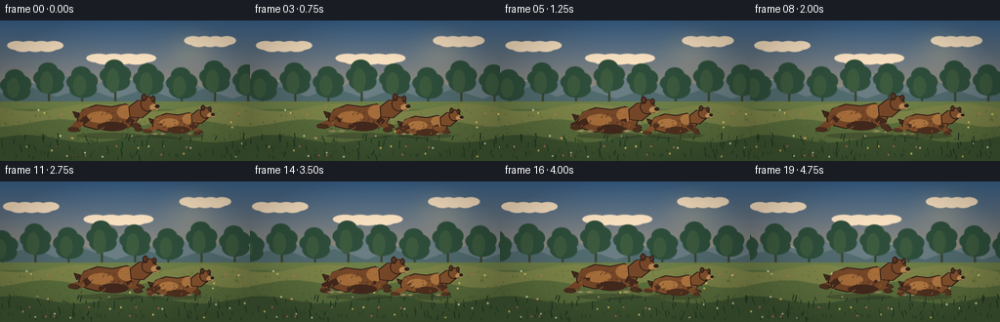
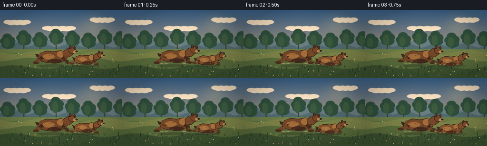
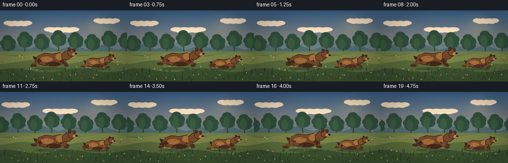
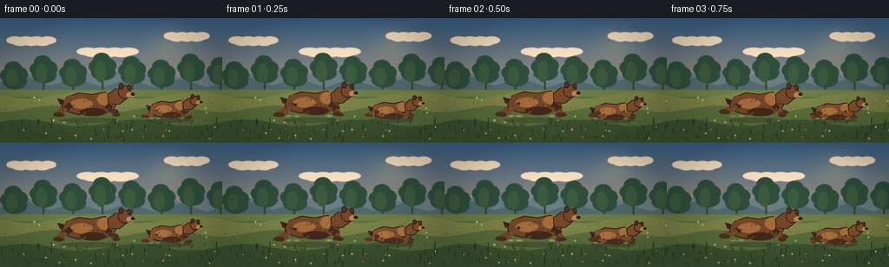

CODING AGENTS AS PIXEL WORLD MODELS
traex/DeepSeek-V4.1-Flash · instance_preservation_0013
点击播放 · 原生 RGB 像素
逐轮保存的候选
回放视频、检查图与代码变化。
每份候选均可单独播放。实际图片检查记录在下方工具轨迹中。
候选 01播放与检查图
点击播放 · 原生 RGB 像素


展开代码变化
--- 上一保存版本 +++ 本次保存版本 @@ -0,0 +1,343 @@ +from pathlib import Path +import math + +import numpy as np +from PIL import Image, ImageDraw, ImageFilter + +from artifact_io import save + + +W, H, FPS, N = 256, 144, 4, 20 +SS = 4 +SW, SH = W * SS, H * SS +ROOT = Path(__file__).resolve().parent + + +def sc(value): + return int(round(value * SS)) + + +def xy(points): + return [(sc(x), sc(y)) for x, y in points] + + +def ellipse(draw, box, fill, outline=None, width=1): + draw.ellipse(tuple(sc(v) for v in box), fill=fill, outline=outline, width=sc(width)) + + +def polygon(draw, points, fill, outline=None, width=1): + draw.polygon(xy(points), fill=fill) + if outline: + draw.line(xy(points + [points[0]]), fill=outline, width=sc(width), joint="curve") + + +def line(draw, points, fill, width=1): + draw.line(xy(points), fill=fill, width=sc(width), joint="curve") + + +def lerp(a, b, t): + return tuple(int(round(a[i] + (b[i] - a[i]) * t)) for i in range(3)) + + +def rounded_polygon(draw, points, radius, fill): + draw.polygon(xy(points), fill=fill) + for x, y in points: + ellipse(draw, (x - radius, y - radius, x + radius, y + radius), fill) + + +def background(t): + """Painterly sunrise meadow with three independent parallax layers.""" + y = np.linspace(0, 1, SH, dtype=np.float32)[:, None] + x = np.linspace(0, 1, SW, dtype=np.float32)[None, :] + + sky_top = np.array([59, 101, 143], dtype=np.float32) + sky_bottom = np.array([244, 183, 113], dtype=np.float32) + sky = sky_top[None, None, :] * (1 - y[..., None]) + sky_bottom[None, None, :] * y[..., None] + sky = np.broadcast_to(sky, (SH, SW, 3)).copy() + + sun_x = 0.77 + sun_y = 0.22 + glow = np.exp(-(((x - sun_x) / 0.15) ** 2 + ((y - sun_y) / 0.22) ** 2) * 2.2) + sky = sky * (1 - glow[..., None] * 0.18) + np.array([255, 225, 154]) * glow[..., None] * 0.18 + image = Image.fromarray(np.clip(sky, 0, 255).astype(np.uint8), "RGB") + draw = ImageDraw.Draw(image) + + # Soft high clouds. + for cx, cy, width, alpha in [ + (36 - t * 1.5, 25, 50, 70), + (124 - t * 1.0, 38, 62, 56), + (215 - t * 1.8, 20, 46, 60), + ]: + for k in range(7): + ox = (k - 3) * width / 8 + ellipse(draw, (cx + ox - width / 5, cy - 4 + (k % 2) * 2, + cx + ox + width / 5, cy + 5 + (k % 2) * 2), + (255, 231, 198, alpha)) + + # Far mountains. + draw.polygon(xy([(0, 80), (0, 67), (22, 59), (45, 68), (68, 57), + (92, 69), (122, 53), (153, 67), (180, 58), (211, 70), + (236, 59), (256, 66), (256, 91)]), (107, 126, 132)) + draw.polygon(xy([(0, 82), (0, 75), (31, 68), (58, 78), (86, 69), + (119, 80), (148, 70), (179, 80), (208, 70), (238, 80), + (256, 74), (256, 94), (0, 94)]), (82, 108, 111)) + # Snow-lit ridge highlights. + line(draw, [(20, 60), (38, 64), (45, 68)], (180, 172, 146), 1.2) + line(draw, [(121, 54), (137, 61), (151, 66)], (178, 166, 141), 1.0) + + # Midground tree line, moving slowly. + shift = (t * 5) % 34 + for i in range(-1, 10): + tx = i * 34 - shift + th = 17 + (i * 7 % 11) + trunk = (58, 69, 47) + draw.rectangle(tuple(sc(v) for v in (tx + 15, 82 - th, tx + 17, 88)), fill=trunk) + for dx, dy, rx, ry in [(-6, -th + 1, 10, 8), (5, -th, 11, 9), + (-1, -th - 7, 10, 8), (1, -th + 8, 14, 9)]: + ellipse(draw, (tx + 16 + dx - rx, 82 + dy - ry, + tx + 16 + dx + rx, 82 + dy + ry), (47, 79, 60)) + ellipse(draw, (tx + 7, 76 - th, tx + 20, 87 - th // 2), (61, 91, 63)) + + # Meadow base and rolling bands. + for yy, color in [(83, (111, 128, 72)), (91, (87, 111, 62)), + (106, (71, 94, 54)), (124, (49, 72, 45))]: + draw.rectangle((0, sc(yy), SW, SH), fill=color) + for band, color in [(0, (127, 135, 74)), (1, (93, 113, 62)), (2, (64, 87, 50))]: + pts = [(0, 90 + band * 15)] + for i in range(17): + px = i * 16 + py = 89 + band * 16 + 4 * math.sin(i * 0.78 + band * 1.7 + t * 0.25) + pts.append((px, py)) + pts += [(256, 144), (0, 144)] + draw.polygon(xy(pts), fill=color) + + # Meadow grass flecks and flowers, denser toward foreground. + rng = np.random.default_rng(17) + for i in range(240): + gx = rng.uniform(-20, 280) + gy = rng.uniform(86, 143) + depth = (gy - 86) / 57 + gx = (gx - t * (4 + depth * 9)) % 290 - 12 + color = lerp((112, 125, 64), (38, 64, 38), depth) + hgt = 0.8 + depth * 2.6 + line(draw, [(gx, gy), (gx - 1, gy - hgt)], color, 0.65 + depth * 0.35) + for i in range(34): + fx = rng.uniform(-10, 266) + fy = rng.uniform(89, 140) + depth = (fy - 89) / 51 + fx = (fx - t * (4 + depth * 8)) % 280 - 12 + color = [(243, 211, 115), (239, 237, 197), (215, 118, 95)][i % 3] + ellipse(draw, (fx - 0.8, fy - 0.8, fx + 0.8, fy + 0.8), color) + + return image.filter(ImageFilter.GaussianBlur(0.32 * SS)) + + +def draw_leg(draw, root, knee, paw, back_color, front_color, width, paw_color): + line(draw, [root, knee], back_color, width + 1.3) + line(draw, [knee, paw], front_color, width) + ellipse(draw, (paw[0] - width * 0.8, paw[1] - width * 0.42, + paw[0] + width * 0.8, paw[1] + width * 0.5), paw_color) + # Small claws. + for i in range(3): + line(draw, [(paw[0] + width * (0.45 + i * 0.16), paw[1] + 0.4), + (paw[0] + width * (0.60 + i * 0.16), paw[1] + 1.1)], + (44, 33, 25), 0.45) + + +def draw_bear(draw, cx, ground_y, scale, phase, facing=1, companion=False): + """Side-view running bear, drawn with a four-beat gallop silhouette.""" + dark = (69, 42, 29) if not companion else (82, 50, 32) + mid = (119, 72, 41) if not companion else (135, 84, 46) + light = (168, 111, 59) if not companion else (181, 123, 67) + muzzle = (184, 137, 83) if not companion else (198, 151, 93) + paw = (77, 50, 32) if not companion else (92, 58, 36) + outline = (52, 33, 25) + + # Gallop: torso rises slightly as front limbs reach and hind limbs push. + bob = -2.3 * math.sin(phase * 2 * math.pi + 0.3) * scale + lean = 1.7 * math.sin(phase * 2 * math.pi) * scale + cy = ground_y + bob + + # Rear pair first so the silhouette has clear overlap. + rear_swing = math.sin(phase * 2 * math.pi + math.pi) + rear_fold = max(0.0, math.cos(phase * 2 * math.pi + math.pi)) + hind_root = (cx - 24 * scale, cy - 14 * scale) + hind_knee = (hind_root[0] - (8 + 8 * rear_swing) * scale, + cy - (9 - 3 * rear_swing) * scale) + hind_paw = (hind_knee[0] - (7 - 12 * rear_swing) * scale, + ground_y - (1.8 + 4.5 * rear_fold) * scale) + draw_leg(draw, hind_root, hind_knee, hind_paw, dark, mid, 5.7 * scale, paw) + + # Far foreleg. + fore_phase = phase + 0.47 + fore_swing = math.sin(fore_phase * 2 * math.pi) + fore_fold = max(0.0, math.cos(fore_phase * 2 * math.pi)) + fore_root = (cx + 21 * scale, cy - 12 * scale) + fore_knee = (fore_root[0] + (4 + 8 * fore_swing) * scale, + cy - (8 - 2.5 * fore_swing) * scale) + fore_paw = (fore_knee[0] + (7 - 9 * fore_swing) * scale, + ground_y - (1.8 + 4.2 * fore_fold) * scale) + draw_leg(draw, fore_root, fore_knee, fore_paw, dark, lerp(mid, dark, 0.25), + 5.4 * scale, paw) + + # Torso: powerful shoulder hump, narrower hips, shaggy underside. + body_pts = [ + (cx - 33 * scale, cy - 13 * scale), + (cx - 27 * scale, cy - 22 * scale), + (cx - 13 * scale, cy - 27 * scale), + (cx + 3 * scale, cy - 25 * scale), + (cx + 18 * scale, cy - 28 * scale), + (cx + 29 * scale, cy - 23 * scale), + (cx + 32 * scale, cy - 13 * scale), + (cx + 27 * scale, cy - 5 * scale), + (cx + 15 * scale, cy - 2 * scale), + (cx + 1 * scale, cy - 3 * scale), + (cx - 13 * scale, cy - 1 * scale), + (cx - 25 * scale, cy - 4 * scale), + (cx - 32 * scale, cy - 8 * scale), + ] + polygon(draw, body_pts, mid, outline, 1.25) + ellipse(draw, (cx - 31 * scale, cy - 24 * scale, cx - 8 * scale, cy - 4 * scale), mid) + ellipse(draw, (cx + 5 * scale, cy - 27 * scale, cx + 31 * scale, cy - 3 * scale), mid) + + # Shoulder hump and warm light from upper right. + ellipse(draw, (cx + 9 * scale, cy - 27 * scale, cx + 29 * scale, cy - 12 * scale), light) + ellipse(draw, (cx - 23 * scale, cy - 20 * scale, cx + 4 * scale, cy - 8 * scale), light) + ellipse(draw, (cx - 12 * scale, cy - 9 * scale, cx + 20 * scale, cy + 1 * scale), dark) + + # Short tail. + polygon(draw, [(cx - 31 * scale, cy - 18 * scale), + (cx - 38 * scale, cy - 20 * scale), + (cx - 35 * scale, cy - 13 * scale)], dark, outline, 0.9) + + # Neck and head with forward reach. + neck = [(cx + 22 * scale, cy - 25 * scale), + (cx + 31 * scale, cy - 32 * scale), + (cx + 43 * scale, cy - 33 * scale), + (cx + 47 * scale, cy - 22 * scale), + (cx + 36 * scale, cy - 13 * scale), + (cx + 23 * scale, cy - 14 * scale)] + polygon(draw, neck, mid, outline, 1.1) + ellipse(draw, (cx + 34 * scale, cy - 36 * scale, + cx + 50 * scale, cy - 20 * scale), mid, outline, 1.1) + # Rounded ears. + ellipse(draw, (cx + 35 * scale, cy - 39 * scale, + cx + 41 * scale, cy - 31 * scale), dark, outline, 0.9) + ellipse(draw, (cx + 36.5 * scale, cy - 37.5 * scale, + cx + 39.5 * scale, cy - 33.5 * scale), (91, 54, 35)) + ellipse(draw, (cx + 45 * scale, cy - 37 * scale, + cx + 50 * scale, cy - 30 * scale), dark, outline, 0.9) + ellipse(draw, (cx + 46.3 * scale, cy - 35.8 * scale, + cx + 48.8 * scale, cy - 32.5 * scale), (91, 54, 35)) + + # Muzzle and nose. + ellipse(draw, (cx + 44 * scale, cy - 28 * scale, + cx + 54 * scale, cy - 21 * scale), muzzle) + ellipse(draw, (cx + 49.5 * scale, cy - 27.5 * scale, + cx + 54.5 * scale, cy - 23.5 * scale), (47, 35, 29)) + line(draw, [(cx + 47.2 * scale, cy - 21.6 * scale), + (cx + 50.4 * scale, cy - 22.0 * scale)], outline, 0.65) + # Eye and brow. + ellipse(draw, (cx + 45.8 * scale, cy - 33.0 * scale, + cx + 47.4 * scale, cy - 31.5 * scale), (28, 24, 22)) + ellipse(draw, (cx + 46.1 * scale, cy - 32.8 * scale, + cx + 46.7 * scale, cy - 32.2 * scale), (226, 208, 160)) + line(draw, [(cx + 44.7 * scale, cy - 34.0 * scale), + (cx + 47.8 * scale, cy - 33.2 * scale)], dark, 0.75) + + # Near foreleg over torso. + near_phase = phase + 0.06 + near_swing = math.sin(near_phase * 2 * math.pi) + near_fold = max(0.0, math.cos(near_phase * 2 * math.pi)) + near_root = (cx + 20 * scale, cy - 12 * scale) + near_knee = (near_root[0] + (3 + 9 * near_swing) * scale, + cy - (8 - 2.5 * near_swing) * scale) + near_paw = (near_knee[0] + (7 - 10 * near_swing) * scale, + ground_y - (1.4 + 4.8 * near_fold) * scale) + draw_leg(draw, near_root, near_knee, near_paw, dark, mid, 6.0 * scale, paw) + + # Near hind leg crosses the belly. + near_hind_phase = phase + 0.5 + nh_swing = math.sin(near_hind_phase * 2 * math.pi) + nh_fold = max(0.0, math.cos(near_hind_phase * 2 * math.pi)) + nh_root = (cx - 22 * scale, cy - 13 * scale) + nh_knee = (nh_root[0] - (7 + 9 * nh_swing) * scale, + cy - (8 - 2.5 * nh_swing) * scale) + nh_paw = (nh_knee[0] - (7 - 12 * nh_swing) * scale, + ground_y - (1.5 + 4.2 * nh_fold) * scale) + draw_leg(draw, nh_root, nh_knee, nh_paw, dark, mid, 5.8 * scale, paw) + + # Shaggy fur edges and highlights. + rng = np.random.default_rng(33 if companion else 19) + for i in range(30): + fx = cx + rng.uniform(-30, 26) * scale + fy = cy + rng.uniform(-21, -1) * scale + length = rng.uniform(1.0, 3.1) * scale + tone = light if (i % 4 == 0) else dark + line(draw, [(fx, fy), (fx - 1.8 * scale, fy + length)], tone, 0.55 * scale) + # A few soft body streaks for volume. + for fx, fy in [(-18, -17), (-11, -20), (-4, -18), (8, -21), (16, -19)]: + line(draw, [(cx + fx * scale, cy + fy * scale), + (cx + (fx + 5) * scale, cy + (fy - 1) * scale)], + lerp(light, mid, 0.4), 0.8 * scale) + + # Dust kicked by each planted paw. + for sx, sy, strength in [(-29, 0, abs(rear_swing)), (20, 0, abs(near_swing)), + (-19, 0, abs(nh_swing))]: + if strength > 0.48: + for j in range(4): + a = strength * (1 - j / 5) + rx = (2.0 + j * 1.2) * scale + ellipse(draw, (cx + sx * scale - rx, ground_y - sy * scale - 1.0 * scale, + cx + sx * scale + rx, ground_y + 1.2 * scale), + (207, 172, 118, int(90 * a))) + + +def render_frame(index): + t = index / FPS + image = background(t) + draw = ImageDraw.Draw(image, "RGBA") + + # Contact shadows help anchor the two runners. + for cx, width in [(112, 34), (179, 28)]: + ellipse(draw, (cx - width, 115, cx + width, 121), (43, 48, 33, 90)) + + # Adult bear in front, smaller companion slightly behind and to the right. + adult_phase = (index / 7.5) % 1.0 + companion_phase = (index / 7.5 + 0.34) % 1.0 + draw_bear(draw, 111 + 1.2 * math.sin(index * 0.7), 113, 0.96, + adult_phase, companion=False) + draw_bear(draw, 179 + 1.0 * math.sin(index * 0.7 + 1.4), 116, 0.73, + companion_phase, companion=True) + + # Foreground grass adds depth and motion. + rng = np.random.default_rng(51) + for i in range(55): + gx = (rng.uniform(0, 280) - t * 18) % 280 - 12 + gy = rng.uniform(121, 144) + bend = rng.uniform(-2.0, 2.0) + line(draw, [(gx, gy), (gx + bend, gy - rng.uniform(3, 8))], + (35, 61, 38), rng.uniform(0.7, 1.3)) + + # Gentle vignette and final film grain. + arr = np.asarray(image, dtype=np.float32) + yy, xx = np.mgrid[0:SH, 0:SW] + nx = (xx - SW / 2) / (SW / 2) + ny = (yy - SH / 2) / (SH / 2) + vignette = np.clip(1.0 - 0.18 * (nx * nx + ny * ny), 0.78, 1.0) + arr *= vignette[..., None] + grain_rng = np.random.default_rng(1000 + index) + grain = grain_rng.normal(0, 2.0, (SH, SW, 1)) + arr = np.clip(arr + grain, 0, 255).astype(np.uint8) + image = Image.fromarray(arr, "RGB") + image = image.resize((W, H), Image.Resampling.LANCZOS) + return np.asarray(image, dtype=np.uint8) + + +def main(): + frames = np.stack([render_frame(i) for i in range(N)]) + save(frames, ROOT) + + +if __name__ == "__main__": + main()
候选 02播放与检查图
点击播放 · 原生 RGB 像素


展开代码变化
--- 上一保存版本
+++ 本次保存版本
@@ -299,15 +299,15 @@
draw = ImageDraw.Draw(image, "RGBA")
# Contact shadows help anchor the two runners.
- for cx, width in [(112, 34), (179, 28)]:
+ for cx, width in [(103, 34), (194, 26)]:
ellipse(draw, (cx - width, 115, cx + width, 121), (43, 48, 33, 90))
# Adult bear in front, smaller companion slightly behind and to the right.
adult_phase = (index / 7.5) % 1.0
companion_phase = (index / 7.5 + 0.34) % 1.0
- draw_bear(draw, 111 + 1.2 * math.sin(index * 0.7), 113, 0.96,
+ draw_bear(draw, 103 + 1.2 * math.sin(index * 0.7), 113, 0.96,
adult_phase, companion=False)
- draw_bear(draw, 179 + 1.0 * math.sin(index * 0.7 + 1.4), 116, 0.73,
+ draw_bear(draw, 194 + 1.0 * math.sin(index * 0.7 + 1.4), 116, 0.70,
companion_phase, companion=True)
# Foreground grass adds depth and motion.
可观测工具轨迹
实际执行的命令与返回图片。
命令 1exit 0
/bin/bash -c "pwd && rg --files -g 'prompt.txt' -g 'GENERATION_RULES.md' -g 'task_spec.json' -g '"'!*.pyc'"'"
命令 2exit 0
/bin/bash -c 'git status --short && ls -la'
命令 3exit 0
/bin/bash -c 'cat prompt.txt'
命令 4exit 0
/bin/bash -c 'cat GENERATION_RULES.md'
命令 5exit 0
/bin/bash -c 'cat task_spec.json'
命令 6exit 0
/bin/bash -c "sed -n '1,240p' artifact_io.py && printf '\\n--- player ---\\n' && sed -n '1,240p' player_template.html"
命令 7exit 0
/bin/bash -c 'python generate.py'
命令 8exit 0
/bin/bash -c "find . -maxdepth 2 -type f -printf '%P %s bytes\\n' | sort"
命令 9exit 0
/bin/bash -c 'command -v chafa || command -v viu || command -v jp2 || true'
命令 10exit 0
/bin/bash -c "python - <<'PY'
from PIL import Image
import numpy as np
im=np.asarray(Image.open('inspection.png'))
print('inspection',im.shape,'mean',im.mean((0,1)),'std',im.std((0,1)))
frames=np.load('pixels.npz')['pixels']
print('pixels',frames.shape,frames.dtype,'range',frames.min(),frames.max())
print('frame means',np.round(frames.mean((1,2)),1))
PY"命令 11exit 0
/bin/bash -c "python - <<'PY'
from PIL import Image
import numpy as np
im=np.array(Image.open('frames/03.png').resize((96,54)))
r,g,b=[im[...,i].astype(int) for i in range(3)]
# classify brown bear pixels (redder than green, lower blue)
bear=(r>50)&(r>g*1.25)&(g>b*1.15)&(r<210)
chars=' .:-=+*#%@'
for row in range(54):
line=''
for col in range(96):
# average local luminance and mask
if bear[row,col]: line+='@'
else:
v=int((r[row,col]*.3+g[row,col]*.5+b[row,col]*.2))
line+=chars[min(9,v//26)]
print(line)
PY"命令 12exit 0
/bin/bash -c "python - <<'PY'
from PIL import Image
import numpy as np
for idx in [0,3,7,11,15,19]:
im=np.asarray(Image.open(f'frames/{idx:02d}.png')).astype(float)
# brown pixels only
r,g,b=im[...,0],im[...,1],im[...,2]
m=(r>55)&(r>g*1.3)&(g>b*1.25)&(r<210)
ys,xs=np.where(m)
print(idx,'brown',len(xs),'bbox', (xs.min(),ys.min(),xs.max(),ys.max()) if len(xs) else None)
PY"命令 13exit 1
/bin/bash -c "python - <<'PY'
from PIL import Image
import numpy as np
im=np.asarray(Image.open('frames/03.png')).astype(float)
r,g,b=im[...,0],im[...,1],im[...,2]
m=(r>55)&(r>g*1.3)&(g>b*1.25)&(r<210)
# Print bbox, then ascii of x 55..250, y 70..142 at 2x2
sub=m[70:144,55:251]
for y in range(0,sub.shape[0],2):
row=''
for x in range(0,sub.shape[1],2):
v=sub[y:y+2,x:x+2].sum()
row += ' #'[v>=2]
print(f'{70+y:3d} '+row)
PY"命令 14exit 0
/bin/bash -c "python - <<'PY'
from PIL import Image
import numpy as np
im=np.asarray(Image.open('frames/03.png')).astype(float)
r,g,b=im[...,0],im[...,1],im[...,2]
m=(r>55)&(r>g*1.3)&(g>b*1.25)&(r<210)
sub=m[70:144,55:251]
for y in range(0,sub.shape[0],2):
row=''
for x in range(0,sub.shape[1],2):
row += ' #'[int(sub[y:y+2,x:x+2].sum()>=2)]
print(f'{70+y:3d} '+row)
PY"命令 15exit 0
/bin/bash -c "python - <<'PY'
from PIL import Image
im=Image.open('frames/03.png')
# nearest-neighbor upscale and save a review copy
im.resize((1024,576), Image.Resampling.NEAREST).save('.tmp/review03.png')
PY"命令 16exit 0
/bin/bash -c "python - <<'PY'
from PIL import Image
import numpy as np
im=np.asarray(Image.open('frames/03.png')).astype(float)
r,g,b=im[...,0],im[...,1],im[...,2]
m=(r>55)&(r>g*1.3)&(g>b*1.25)&(r<210)
# color-coded coarse view: bear, ground, sky
for y in range(0,144,3):
row=''
for x in range(0,256,3):
block=m[y:y+3,x:x+3]
row += '#' if block.sum()>=5 else ('+' if block.sum()>=2 else ' ')
print(row)
PY"命令 17exit 0
/bin/bash -c 'python generate.py'
命令 18exit 0
/bin/bash -c "python - <<'PY'
from PIL import Image
import numpy as np
p=np.load('pixels.npz')['pixels']
assert p.shape==(144,256,20) and p.dtype==np.uint32
prev=None
for i in range(20):
im=np.array(Image.open(f'frames/{i:02d}.png'))
assert im.shape==(144,256,3) and im.dtype==np.uint8
d=np.abs(im.astype(int)-(prev.astype(int) if prev is not None else im.astype(int))).mean()
if i: print(f'{i:02d}: mean abs frame delta {d:.2f}')
prev=im
print('index bytes',len(open('index.html','rb').read()))
print('all required artifacts present')
PY"命令 19exit 0
/bin/bash -c "python - <<'PY'
from PIL import Image
import numpy as np
# Verify two substantial brown connected components away from tiny foreground flecks.
for idx in [0,3,7,11,15,19]:
a=np.asarray(Image.open(f'frames/{idx:02d}.png')).astype(int)
r,g,b=a[...,0],a[...,1],a[...,2]
m=(r>55)&(r>g*1.3)&(g>b*1.25)&(r<210)&(np.indices(r.shape)[0]>70)
# x profile
counts=m.sum(0)
runs=[]; start=None
for x,v in enumerate(counts>1):
if v and start is None:start=x
if start is not None and (not v or x==255):
end=x if not v else x+1
if end-start>5:runs.append((start,end,int(counts[start:end].sum())))
start=None
print(idx,runs)
PY"保存候选 2 份；完成命令 19 次；可验证图片返回 0 张。原始 API 响应与完整日志保留在本地。